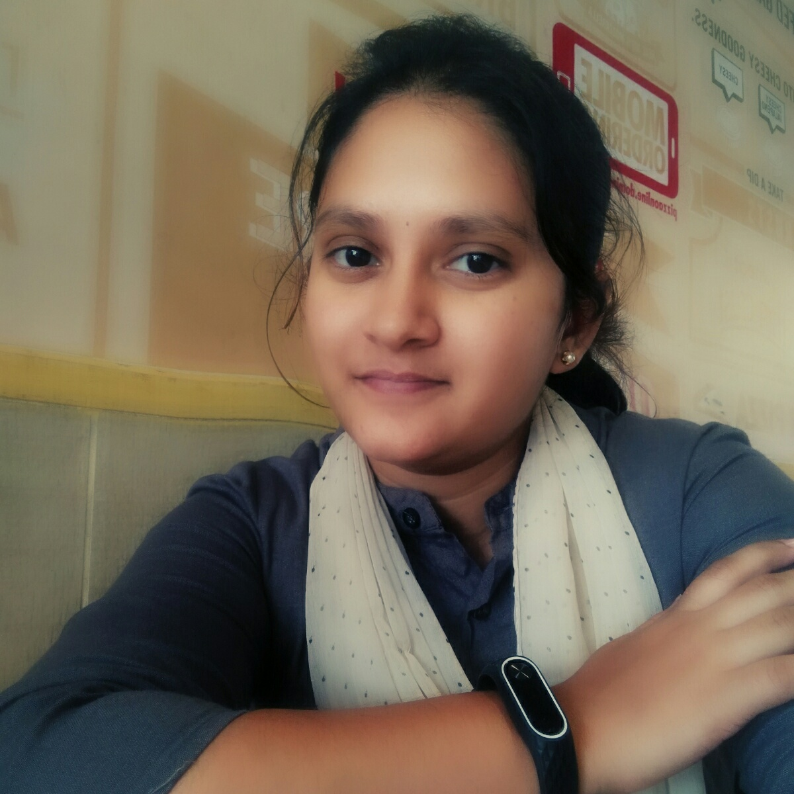

EUGENIA E. ROSS
ANTHROPOLGIST & SOCIOLOGIST

PROFILE
I am a committed researcher with excellent communication skills both written and oral i have experience and expereience in a variety of areas.Such as cultural antrhopology,social anthropology and art science
CONTACT
Mobile +78747474949
Email:aasds@gmail.com
512 manh street
Dego,california
EDUCATION
The New Nebraska University Bachelor of Science in Anthropology
SKILLS
- Microsoft office programs
- Editing copy
- Extension Knowledge of Arthropology
- Research and data collection
- Data assessment
WORK EXPERIENCE
RESEARCH COORDINATOR, TRADEWELL INC.
JUN 2019 - JAN 2020
Organized and conducted countless interviews with clients and professional subjects.Assessing resources and producing deliverables on time.Preparation of
research publications .Identifying problems and resolving them with a competent team Organized and conducted countless interviews with clents and professional subjects.
RESEARCH ASSISTANT,THE TANNER GROUP
JUN 2019 - JAN 2020
Responsible for following established guidelines and gathering relavant data for projects,reports,and presentations.Successfully conducted surveys and literature on a collection of topics
as well as curating the results.